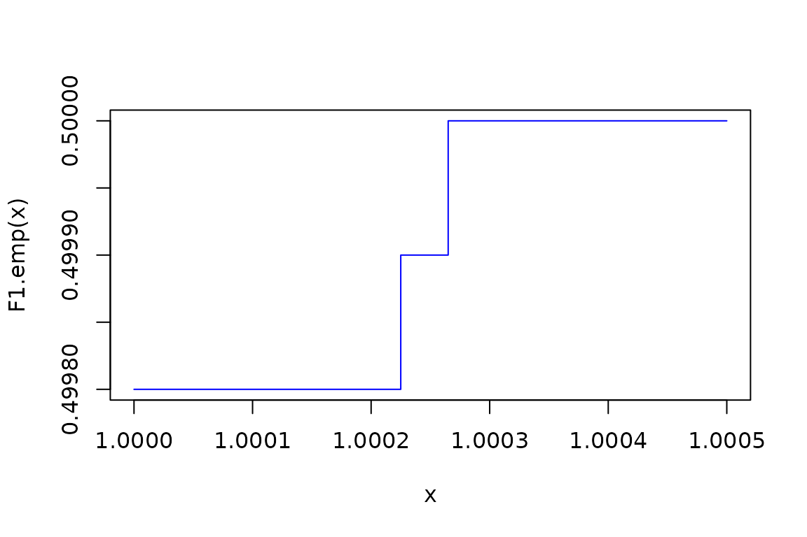

Introduction
To demonstrate the R package algebraic.dist, we consider the multivariate normal distribution (MVN) and its empirical approximation.
We start by loading the package:
Defining the data generating process
We define the parameters of the data generating process (DGP) with:
# we define the parameters of the MVN
M <- mvn(mu = 1:5, sigma = diag(1:5))
print(M)
#> Multivariate normal distribution with mean:
#> [1] 1 2 3 4 5
#> and variance-covariance matrix:
#> [,1] [,2] [,3] [,4] [,5]
#> [1,] 1 0 0 0 0
#> [2,] 0 2 0 0 0
#> [3,] 0 0 3 0 0
#> [4,] 0 0 0 4 0
#> [5,] 0 0 0 0 5Each observation is an i.i.d. vector from the MVN. We sample from the MVN with:
# we generate a sample of size n
n <- 100000
# we sample from the MVN
data <- sampler(M)(n)We have a sample of size \(n=100000\) from the DGP. We show some observations from this sample with:
head(data, n=6)
#> [,1] [,2] [,3] [,4] [,5]
#> [1,] -0.379 3.34 4.66 3.53 2.03
#> [2,] -1.244 1.72 1.78 5.94 3.10
#> [3,] 1.416 4.76 1.97 2.19 7.57
#> [4,] 0.782 3.62 2.28 5.15 3.54
#> [5,] 0.972 2.41 2.19 3.54 1.30
#> [6,] 1.460 1.46 4.06 5.47 5.20Now, we also construct a empirical distribution from the sample with:
emp <- empirical_dist(data)
print(emp)
#> Empirical Distribution
#> Mean:
#> [1] 1.00 2.00 3.00 4.01 4.99
#> Covariance:
#> [,1] [,2] [,3] [,4] [,5]
#> [1,] 0.994590 -0.000318 0.000127 -0.00888 0.00530
#> [2,] -0.000318 1.992270 0.006073 -0.01008 -0.00917
#> [3,] 0.000127 0.006073 2.991805 0.00015 -0.01201
#> [4,] -0.008884 -0.010080 0.000150 3.99985 -0.00469
#> [5,] 0.005302 -0.009167 -0.012007 -0.00469 4.98894
#> Number of observations: 100000Let’s show the supports of the empirical distribution and the MVN:
# generate a data frame with the dimension, supremum,
# and infimum of the MVN and empirical distribution
df <- data.frame(supremum.mvn = supremum(sup(M)),
supremum.emp = supremum(sup(emp)),
infimum.mvn = infimum(sup(M)),
infimum.emp = infimum(sup(emp)))
row.names(df) <- paste0("param",1:dim(sup(M)))
print(df)
#> supremum.mvn supremum.emp infimum.mvn infimum.emp
#> param1 Inf 5.24 -Inf -3.24
#> param2 Inf 7.97 -Inf -3.91
#> param3 Inf 10.40 -Inf -4.81
#> param4 Inf 12.12 -Inf -4.00
#> param5 Inf 14.41 -Inf -4.56Let’s compare the mean and covariance-variance matrices of both the MVN and the empirical distribution of the MVN. First, let’s look at the means.
As expected, pretty close. Now let’s look at the variance-covariance:
vcov(M)
#> [,1] [,2] [,3] [,4] [,5]
#> [1,] 1 0 0 0 0
#> [2,] 0 2 0 0 0
#> [3,] 0 0 3 0 0
#> [4,] 0 0 0 4 0
#> [5,] 0 0 0 0 5
vcov(emp)
#> [,1] [,2] [,3] [,4] [,5]
#> [1,] 0.994590 -0.000318 0.000127 -0.00888 0.00530
#> [2,] -0.000318 1.992270 0.006073 -0.01008 -0.00917
#> [3,] 0.000127 0.006073 2.991805 0.00015 -0.01201
#> [4,] -0.008884 -0.010080 0.000150 3.99985 -0.00469
#> [5,] 0.005302 -0.009167 -0.012007 -0.00469 4.98894The true variances of the population defined by the MVN \(M\) is the diagonal of the variance-covariance matrix:
Let’s compute the variances using the general expectation method:
mu.emp <- mean(emp)
expectation(emp, function(x) (x - mu.emp)^2)
#> [1] 0.995 1.992 2.992 4.000 4.989
expectation(M, function(x) (x - mean(M))^2, control = list(n = n))
#> [1] 1.00 2.00 3.00 4.00 5.02We see that these are pretty good estimates, as the expectation is actually a Monte Carlo approximation. We can see the CI’s with:
expectation(emp, function(x) (x - mu.emp)^2, control = list(compute_stats = TRUE))
#> $value
#> [1] 0.995 1.992 2.992 4.000 4.989
#>
#> $ci
#> [,1] [,2]
#> [1,] 0.986 1.00
#> [2,] 1.975 2.01
#> [3,] 2.966 3.02
#> [4,] 3.965 4.03
#> [5,] 4.945 5.03
#>
#> $n
#> [1] 100000
expectation(M, function(x) (x - mean(M))^2, control = list(n = n, compute_stats = TRUE))
#> $value
#> [1] 0.995 1.986 3.015 4.000 4.973
#>
#> $ci
#> [,1] [,2]
#> [1,] 0.987 1.00
#> [2,] 1.969 2.00
#> [3,] 2.989 3.04
#> [4,] 3.965 4.03
#> [5,] 4.929 5.02
#>
#> $n
#> [1] 100000Next, we use the rmap function on the MVN and the empirical distribution to compute the distribution of \((X - E(X))^2\). If we take the mean of this, we should get the variance as shown above:
mu.emp <- mean(emp)
mean(rmap(emp, function(x) (x - mu.emp)^2))
#> [1] 0.995 1.992 2.992 4.000 4.989
mean(rmap(M, function(x) (x - mean(M))^2, n = n))
#> [1] 0.993 2.007 3.012 3.968 5.010These are both reasonable estimates of the variance.
The PDF of the empirical is not very useful – it gets \(1/n\) for each observation:
x <- sampler(emp)(1)
y <- sampler(M)(1)
data.frame(
ob = c("empirical(x)", "MVN(y)"),
pdf.emp = c(density(emp)(x), density(emp)(y)),
pdf.mvn = c(density(M)(x), density(M)(y)))
#> ob pdf.emp pdf.mvn
#> 1 empirical(x) 0.00001 0.0000748
#> 2 MVN(y) 0.00000 0.0000307Let’s plot the CDF of marginal distribution of \(X_1\):
X1.emp <- marginal(emp, 1)
F1.emp <- cdf(X1.emp)
curve(F1.emp(x), from = infimum(sup(X1.emp)), to = supremum(sup(X1.emp)), col = "blue", lty = 1)
X1 <- marginal(M, 1)
F1 <- cdf(X1)
curve(F1(x), from = infimum(sup(X1.emp)), to = supremum(sup(X1.emp)), add = TRUE, col = "red", lty = 2)
legend("topleft", legend = c("empirical", "MVN"), col = c("blue", "red"), lty = c(1, 2))
Given the sample size, the empirical distribution’s CDF is essentially the same as the MVN’s CDF (they’re right on top of each other). Let’s zoom in much closer so we can ee that the empirical CDF is a step function:
curve(F1.emp(x), from = 1, to = 1.0005, col = "blue", lty = 1, type = "s")
Let’s compute some expectations of \(X_1\):
cat("E(X1) = ", expectation(X1, \(x) x), "( expected ", mean(X1), ")\n",
"Var(X1) = ", expectation(X1, \(x)
(x - expectation(X1, \(x) x))^2), "( expected ", vcov(X1), ")\n",
"Skewness(X1) = ", expectation(X1, function(x)
(x - expectation(X1, \(x) x))^3) / expectation(X1, \(x) x)^3, "( expected 0 )\n",
"E(X^2) = ", expectation(X1, \(x) x^2), "( expected ", vcov(X1) + mean(X1)^2, ")")
#> E(X1) = 1 ( expected 1 )
#> Var(X1) = 1 ( expected 1 )
#> Skewness(X1) = -0.000000000000341 ( expected 0 )
#> E(X^2) = 2 ( expected 2 )Let’s show a scatter plot of the joint distribution of \(X_2\) and \(X_4\):
dataX2X4.emp <- sampler(marginal(emp, c(2, 4)))(10000)
dataX2X4.mvn <- sampler(marginal(M, c(2, 4)))(10000)
# scatter plot a 2d sample. use xlab and ylab to label the axes
plot(dataX2X4.emp[,1], dataX2X4.emp[,2], pch = 20, col = "blue", xlab = "X2", ylab = "X4")
# overlay in green the MVN data
points(dataX2X4.mvn[,1], dataX2X4.mvn[,2], pch = 20, col = "green")
legend("topright", legend = c("empirical", "MVN"), col = c("blue", "green"), pch = c(20, 20))
title("Scatter plot of X2 and X4")Let’s look at the MVN’s multivariate CDF:
Now we show the mean of the conditional distribution, \(X | X_1 + X_2 < 0\):
mean(conditional(emp, function(x) x[1] + x[2] < 0))
#> [1] -0.235 -0.465 2.952 4.038 4.949
mean(conditional(M, function(x) x[1] + x[2] < 0))
#> [1] -0.205 -0.484 2.955 4.217 4.980I didn’t do the analysis of what this distribution’s mean should theoretically be, if it’s even practical to derive, but it doesn’t look unreasonable. We see that the mean of the first two components are negative, which makes sense: the sum of the first two components is negative, so the mean of the first two components should be negative.